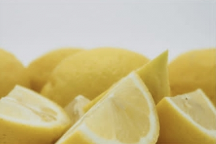

In this fun experiment, your kids can write secret messages that they will learn how to reveal scientifically. You need only basic materials,
and it's sure to be a big hit.
What do you need:
Cotton swab
Lamp or light bulm
Plain white paper
Bowl or cup
Lemon juice
Steps:

First, squeeze the lemon juice into a bowl or cup and mix in a few drops of water.
Next, dip the cotton swap into the lemon juice / water mixture, and write a secret message or draw a secret picture
onto the plain white paper.
Wait a few moments for the paper to dry and for the juice to become invisible.
Finally, hold the paper close to a light bulb or lamp and reveal your secret messages.
What's happening?
Lemon juice contains carbon compounds that are colourless at room temperature. The heat source (in this case the light bulb)
breaks down the compounds and thereby releases the carbon. The carbon oxidizes when it comesinto contact messages visible under
the hot light bulb.